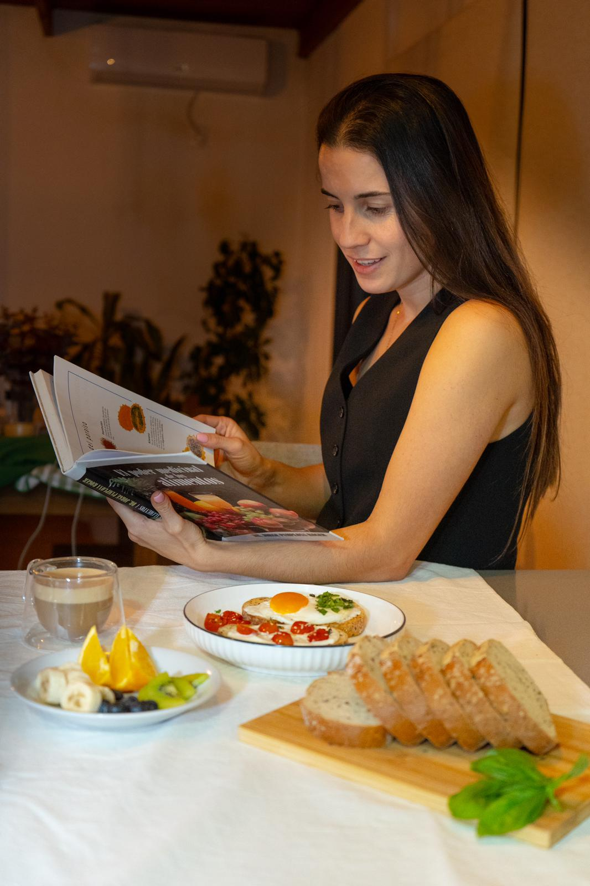

Hola, soy Agustina
Tengo 27 años y desde que me gradué como Licenciada en Nutrición en 2022 me dedico con pasión y constancia a acompañar a personas que buscan mejorar su alimentación, ya sea para mejorar su composición corporal, ganar masa muscular o rendir mejor en el deporte.
Mi enfoque es práctico, real y adaptado a cada persona: sin complicaciones, sin dietas imposibles y con hábitos que realmente se pueden sostener. Mi objetivo es ayudarte a entender tu cuerpo, mejorar tu energía diaria y construir un estilo de vida que te haga sentir bien, por dentro y por fuera.
También soy corredora apasionada, y disfruto de la cocina simple y saludable. Creo que la salud se construye de adentro hacia afuera, integrando nutrición, movimiento y bienestar físico.
Reservar consulta →